قبل البدء
لكل الفريقيعمل دفتر في المتصفح، على حاسوب الاستقبال أو على لوحة رقمية أو على الهاتف. لكل فرد من الفريق حسابه الخاص، ويختار لغته.
-
القائمة
على الحاسوب، القائمة على اليمين: اليوم، المواعيد، قاعة الانتظار، المرضى، الصندوق، التذكيرات والإعدادات. وفي الأعلى: البحث عن مريض (بالاسم أو الرقم) وزرّ موعد بالهاتف.
لتغيير اللغة، اضغطوا على العربية أو Français في أعلى الشاشة. بالعربية، تُقرأ الشاشة كلها من اليمين إلى اليسار.
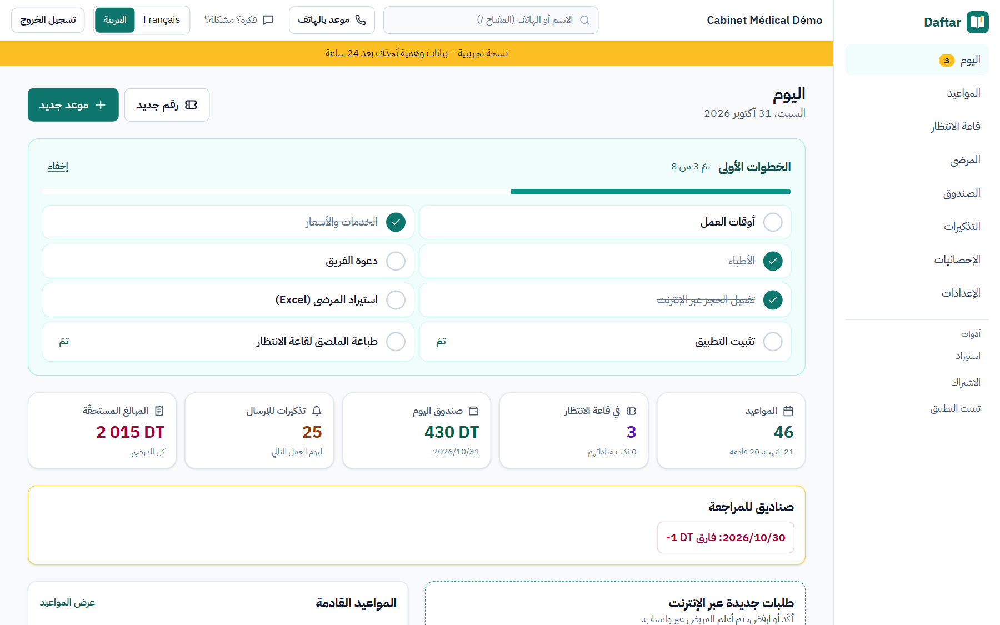
صفحة اليوم: أرقام اليوم والمواعيد القادمة. -
على الهاتف
القائمة في أسفل الشاشة: اليوم، المواعيد، القاعة، المرضى.
وكل ما تبقّى تحت المزيد: الموعد بالهاتف، والبحث عن مريض، والصندوق، والتذكيرات، والإعدادات.
صاحب العيادة كل شيء، بما في ذلك الإعدادات والفريق والإحصائيات وتصدير البيانات. مساعد(ة) المواعيد، وقاعة الانتظار، والمرضى، والصندوق، والتذكيرات، والاستيراد. طبيب(ة) المواعيد، وقاعة الانتظار، والمرضى، والصندوق، والتذكيرات. 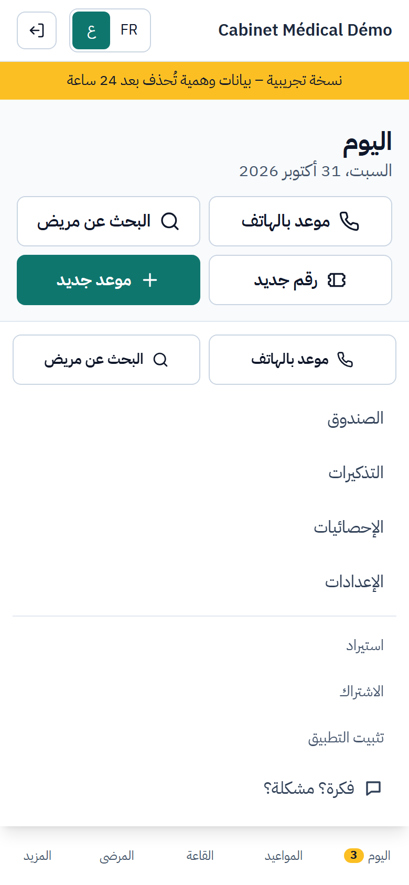
قائمة المزيد مفتوحة.
تثبيت التطبيق
لكل الفريق، على كل جهازيُثبَّت دفتر كتطبيق دون المرور بمتجر التطبيقات: أيقونة على الشاشة الرئيسية أو على سطح المكتب، والتحديثات تصل تلقائيًا. يتطلّب الاتصال بالإنترنت.
-
افتحوا عنوان عيادتكم
لعيادتكم عنوانها الخاص، مثلًا cabinet-ben-salah.daftar.omarfourati.de. افتحوه وسجّلوا الدخول ببريدكم الإلكتروني وكلمة المرور.
في القائمة، تعرض صفحة تثبيت التطبيق (تحت أدوات) خطوات جهازكم ورمز QR لهواتف الفريق.
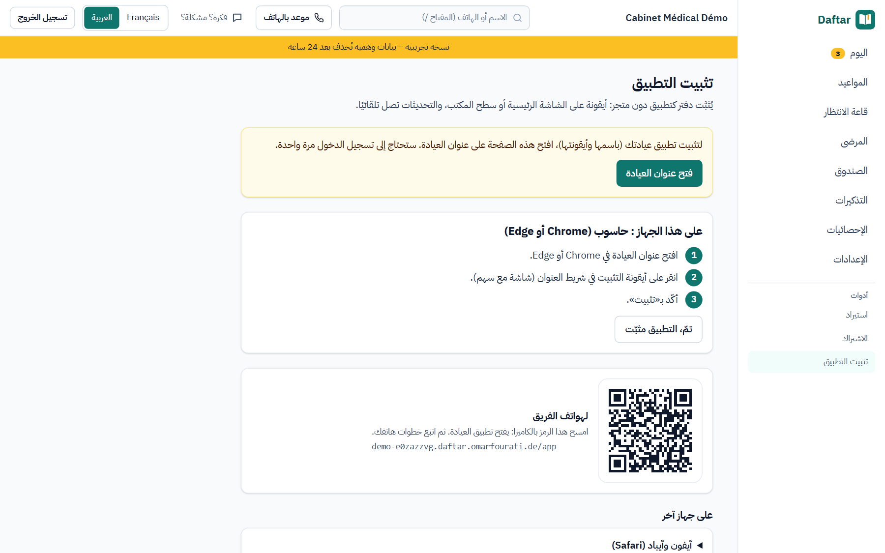
تتغيّر الخطوات حسب الجهاز المستعمل. -
أندرويد (Chrome)
المسوا القائمة ⋮ في أعلى الشاشة.
اختاروا تثبيت التطبيق (أو إضافة إلى الشاشة الرئيسية)، ثم أكّدوا.
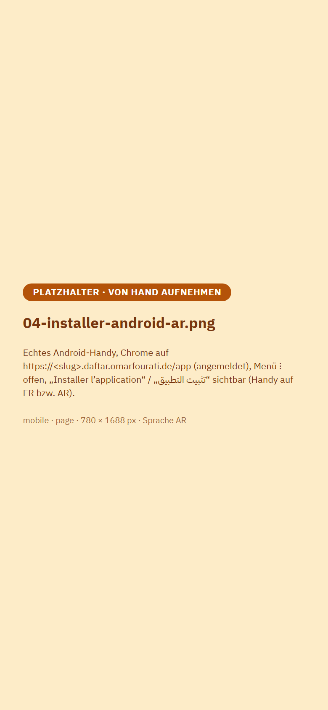
قائمة Chrome على أندرويد. -
آيفون وآيباد (Safari)
المسوا زرّ المشاركة، وهو المربّع مع السهم المتّجه إلى الأعلى.
اختاروا إضافة إلى الشاشة الرئيسية، ثم إضافة.
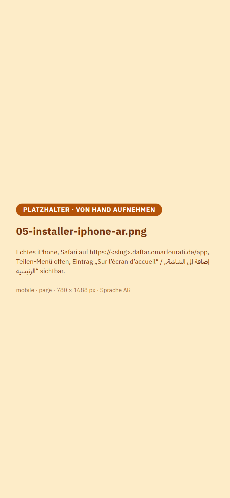
قائمة المشاركة في Safari. -
الحاسوب (Chrome أو Edge)
انقروا على أيقونة التثبيت في طرف شريط العنوان (شاشة مع سهم)، ثم أكّدوا بالنقر على تثبيت. يظهر دفتر في قائمة «ابدأ».
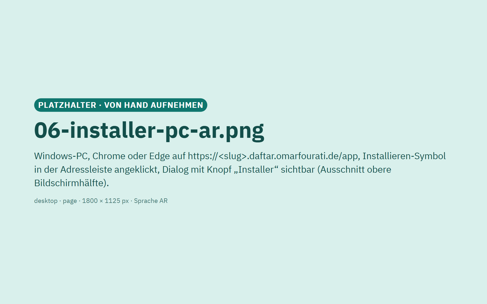
أيقونة التثبيت في طرف شريط العنوان.
نصيحة: افتحوا دفتر بعد ذلك دائمًا من أيقونته. وفي صفحة تثبيت التطبيق، اضغطوا على تمّ، التطبيق مثبّت لشطب هذه الخطوة.
الخطوات الأولى
لصاحب العيادة، مرة واحدةتعرض بطاقة الخطوات الأولى في صفحة اليوم ما يجب ضبطه في البداية. كل سطر يفتح الصفحة المناسبة، ويُشطب وحده عند إتمام الخطوة.
-
قائمة الخطوات الأولى
اضغطوا على سطر للانتقال مباشرة إلى الإعداد المناسب. وزرّ إخفاء يخفي البطاقة عندما يصبح كل شيء جاهزًا.
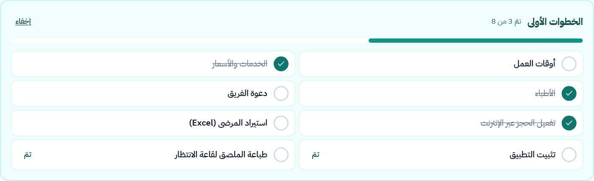
ثماني خطوات، من أوقات العمل إلى الملصق. -
أوقات العمل
الإعدادات ← المواعيد والإغلاق. حدّدوا لكل يوم فترات العمل. الاستراحة = فترتان، مثلًا 08:00–12:30 و14:00–18:00.
زرّ نسخ إلى بقية الأيام يطبّق يومًا واحدًا على الأسبوع كله. ثم حفظ المواعيد.
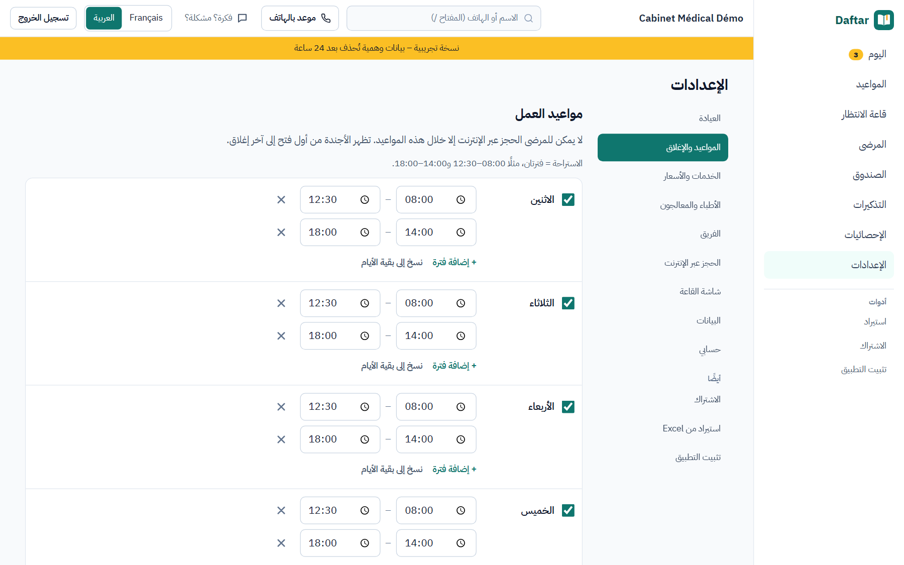
لا يستطيع المرضى الحجز عبر الإنترنت إلا خلال هذه الأوقات. -
العطل والأعياد
تحت أيام الإغلاق الاستثنائي، اختاروا من وإلى والسبب (عطلة، عيد، تكوين…)، ثم إضافة الإغلاق. في هذه الأيام لا مواعيد ولا حجز عبر الإنترنت.
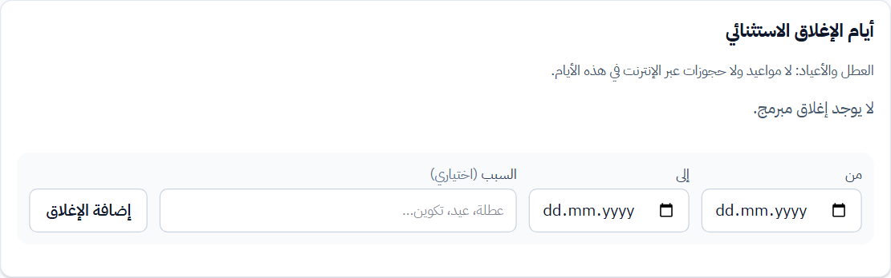
ينبّهكم دفتر إن كانت هناك مواعيد مبرمجة في تلك الأيام. -
الخدمات والأسعار
الإعدادات ← الخدمات والأسعار. قائمة خدمات اختصاصكم جاهزة مسبقًا. لكل خدمة: المدة (تحدّد مكانها في الأجندة)، والسعر إن أردتم، وعبر الإنترنت إن كان بإمكان مرضاكم حجزها بأنفسهم.
زرّ خدمة جديدة لإضافة خدمة.
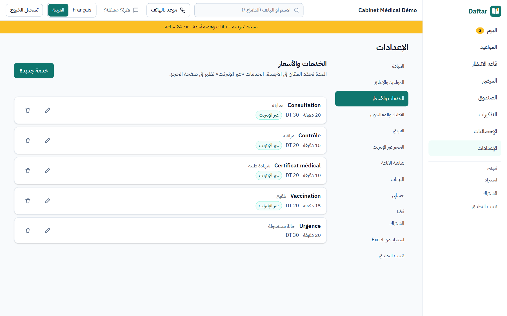
-
الأطباء والمعالجون
الإعدادات ← الأطباء والمعالجون: الأشخاص الذين يستقبلون المرضى. لكلّ منهم عموده ولونه في الأجندة، ولا يحتاج إلى حساب.
زرّ إضافة طبيب/معالج لإضافة شخص.
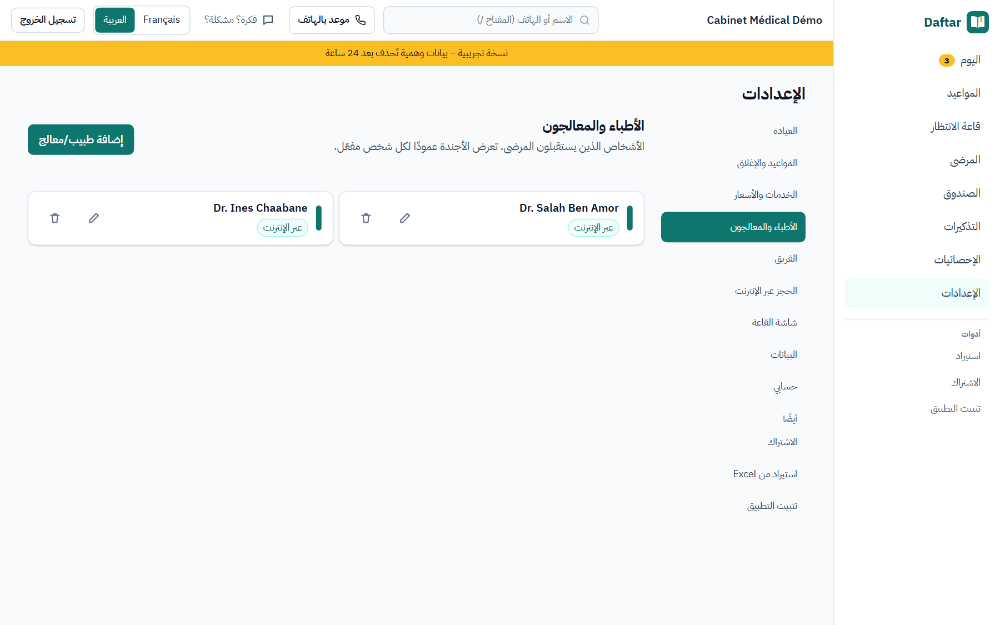
-
دعوة الفريق
الإعدادات ← الفريق، تحت دعوة شخص: اختاروا الدور، ثم إنشاء رابط الدعوة.
أرسلوا الرابط بزرّ إرسال عبر واتساب (أو نسخ). يختار الشخص بنفسه بريده الإلكتروني وكلمة مروره. الرابط صالح 7 أيام، ولا يظهر إلا مرة واحدة.
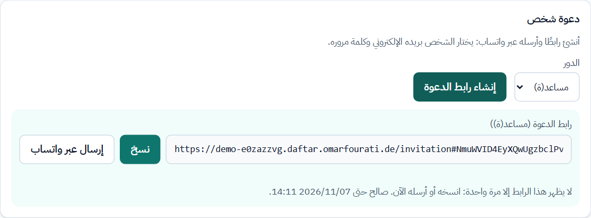
في النسخة التجريبية، يوضّح الرابط الطريقة فقط ولا يُنشئ أي حساب. -
الحجز عبر الإنترنت
الإعدادات ← الحجز عبر الإنترنت. حدّدوا خانة الحجز عبر الإنترنت مفعّل. اختاروا إن كانت الطلبات تُؤكَّد تلقائيًا، وأدنى مهلة قبل الموعد، وعدد الحجوزات في اليوم، ثم حفظ.
وفي الأعلى: عنوان صفحة الحجز الخاصة بعيادتكم، لمشاركته على واتساب أو فيسبوك أو خرائط Google، ورمز QR الخاص بها.
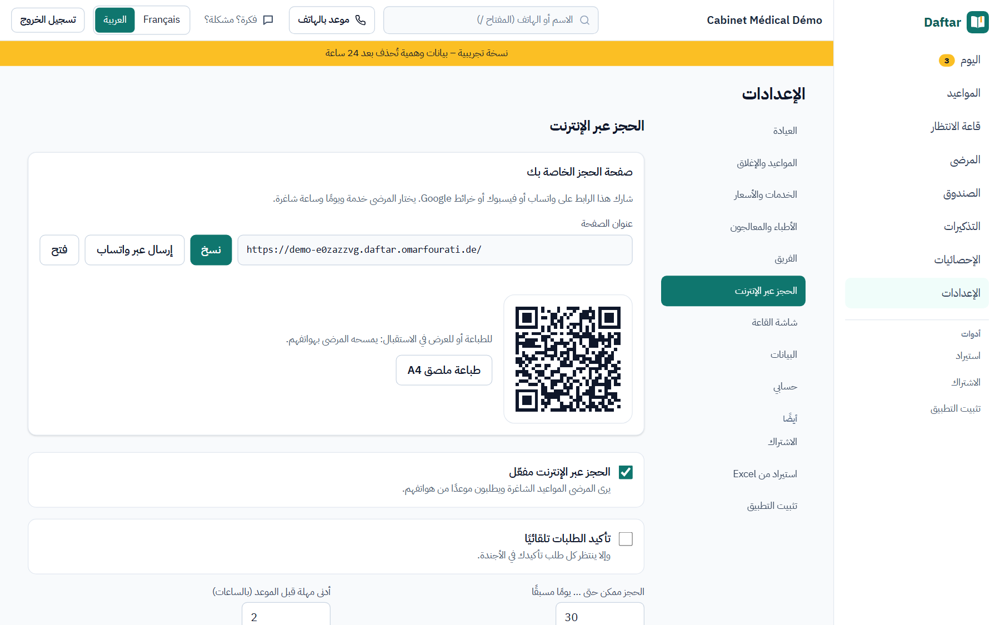
-
ملصق قاعة الانتظار
زرّ طباعة ملصق A4 يُحضّر ملصقًا بالعربية والفرنسية مع رمز QR لصفحتكم. اضغطوا على طباعة الملصق.
في نافذة الطباعة: حجم A4، الهوامش «بدون»، وفعّلوا «رسومات الخلفية».
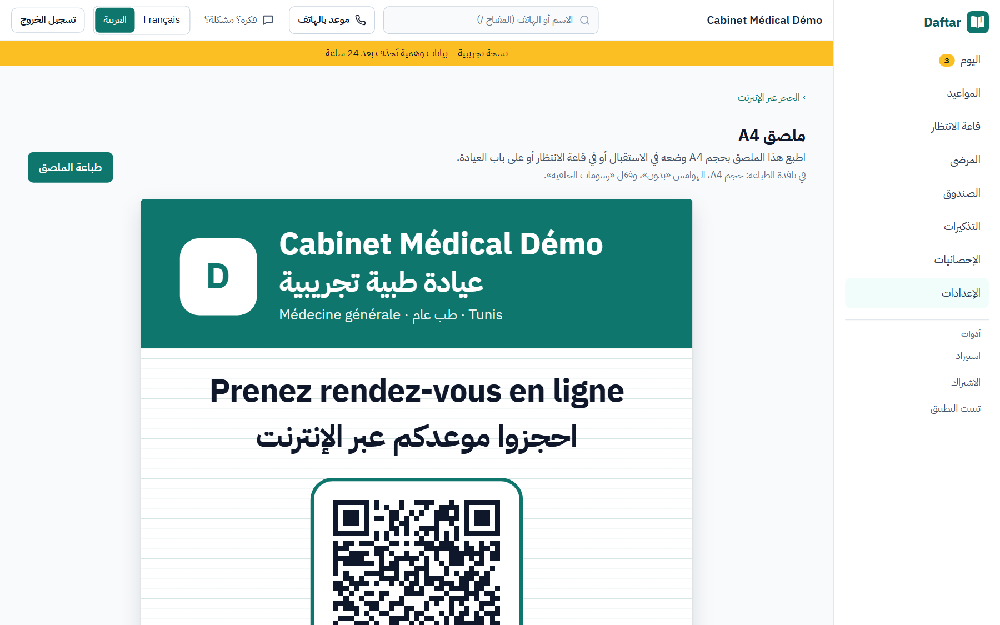
نسيان كلمة المرور؟ في الفريق، يضغط صاحب العيادة على نسيان كلمة المرور بجانب اسم الشخص، ويرسل له الرابط (صالح 24 ساعة).
تسجيل موعد
للاستقبالطريقتان: بالهاتف، يقترح دفتر فورًا أقرب الأوقات الفارغة؛ وفي الأجندة، تختارون اليوم والساعة بأنفسكم. ولا موعدين في الوقت نفسه للطبيب نفسه أو للمريض نفسه أبدًا: دفتر يرفض ذلك.
-
بالهاتف: الرقم أولًا
اضغطوا على موعد بالهاتف في أعلى الشاشة (المفتاح T على الحاسوب). اكتبوا رقم المتّصل: يظهر المرضى الذين لهم هذا الرقم.
اختاروا المريض المناسب (قد تتشارك العائلة رقمًا واحدًا)، أو مريض جديد بهذا الرقم.
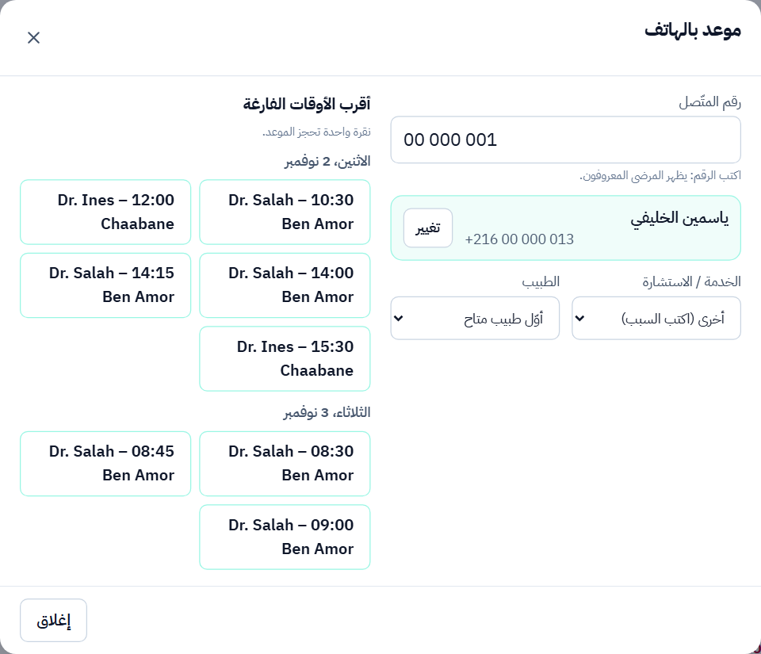
-
الخدمة، ثم وقت فارغ
اختاروا الخدمة / الاستشارة، والطبيب عند الحاجة (وإلا أوّل طبيب متاح). وبجانبها أقرب الأوقات الفارغة: نقرة واحدة تحجز الموعد.
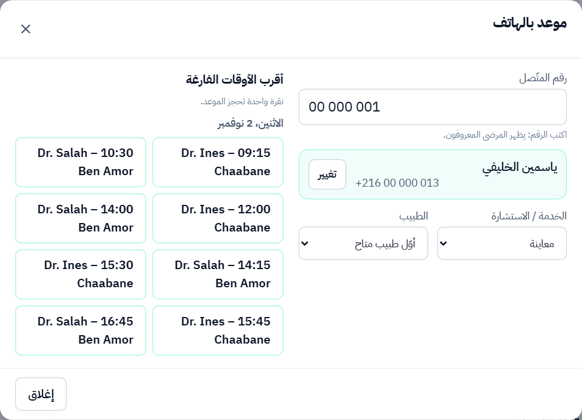
-
رسالة التأكيد
تم حفظ الموعد. رسالة التأكيد جاهزة بلغة المريض: نسخ النص، أو أرسلوها عبر واتساب أو إرسالية قصيرة. وزرّ مكالمة أخرى للمتّصل التالي.
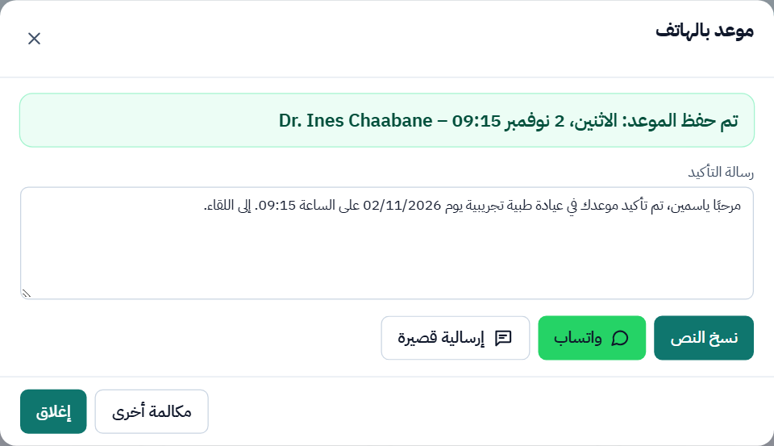
-
الأجندة
افتحوا المواعيد. يوم أو أسبوع، والأسهم لتغيير اليوم، واليوم للعودة. عمود لكل طبيب. وتظهر الطلبات الواردة عبر الإنترنت بخط متقطّع: طلب للتأكيد.
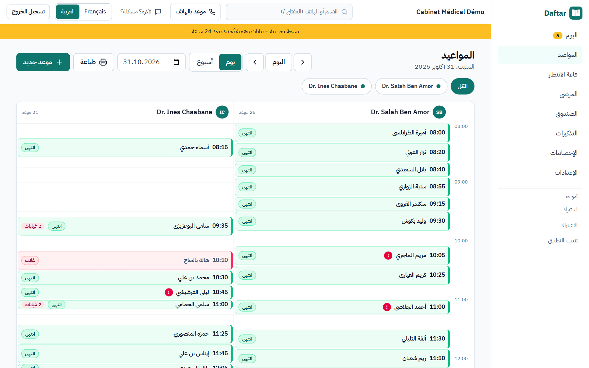
اللون = الحالة: مبرمج، مؤكَّد، وصل، في الفحص، انتهى، غائب. -
موعد جديد في الأجندة
اضغطوا على وقت فارغ، أو على موعد جديد (المفتاح N). ابحثوا عن المريض بالاسم أو الهاتف، أو مريض جديد. اختاروا الخدمة: تُملأ المدة وحدها.
تحقّقوا من التاريخ والساعة والطبيب، ثم حفظ الموعد.
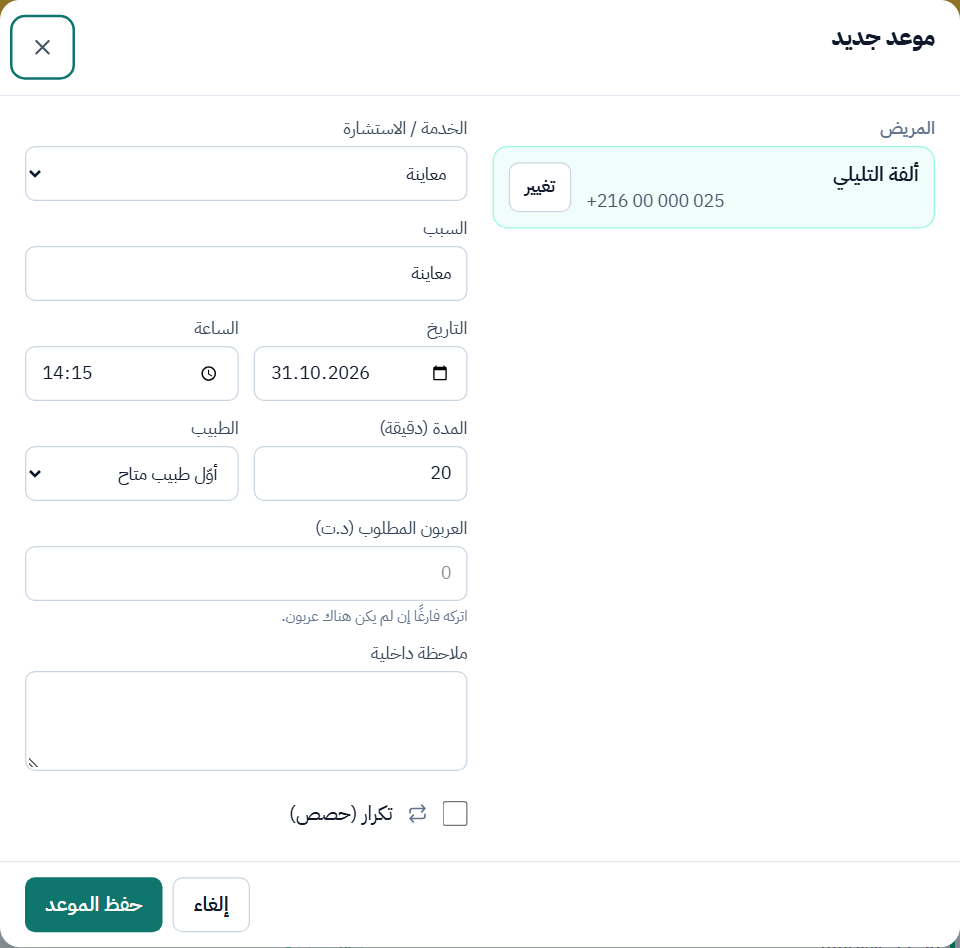
-
الوقت محجوز؟
يعرض دفتر هذا الوقت محجوز. ويقترح أقرب الأوقات الفارغة: اختاروا واحدًا منها، ثم احفظوا.
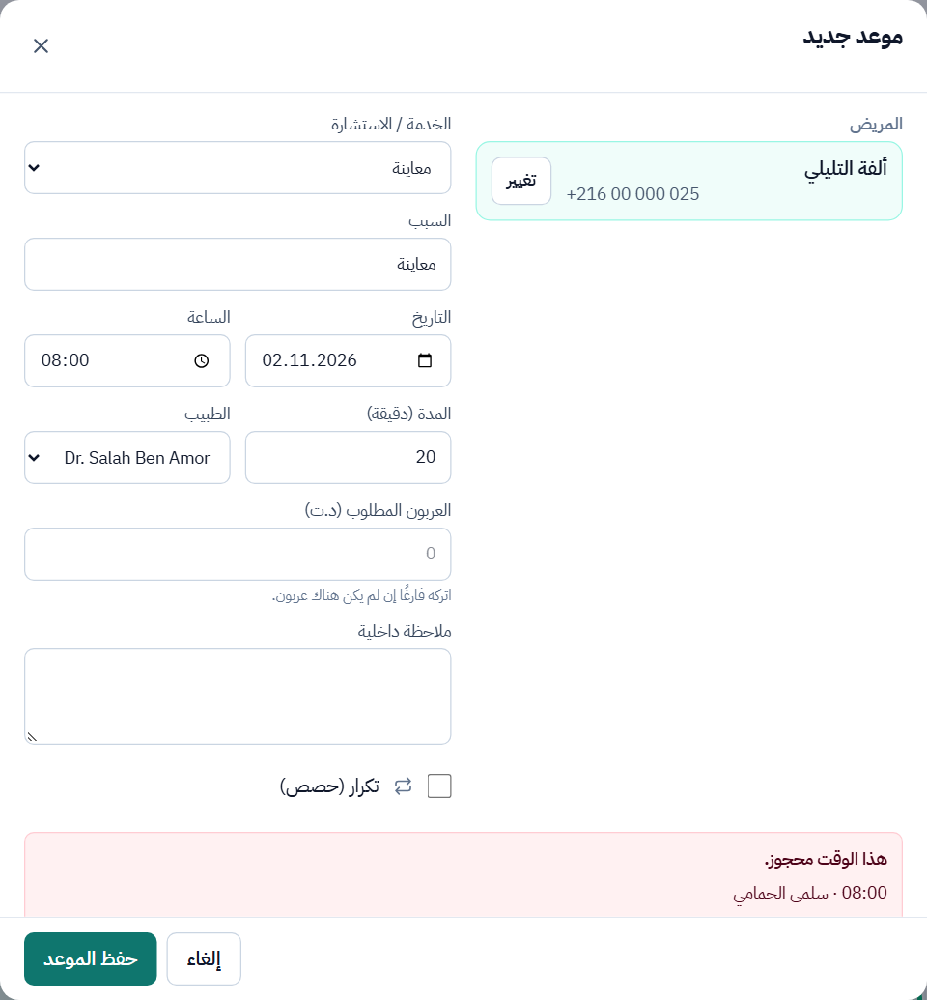
-
على الهاتف
تظهر مواعيد اليوم في قائمة. اضغطوا على موعد لفتحه.
والموعد بالهاتف موجود تحت المزيد.
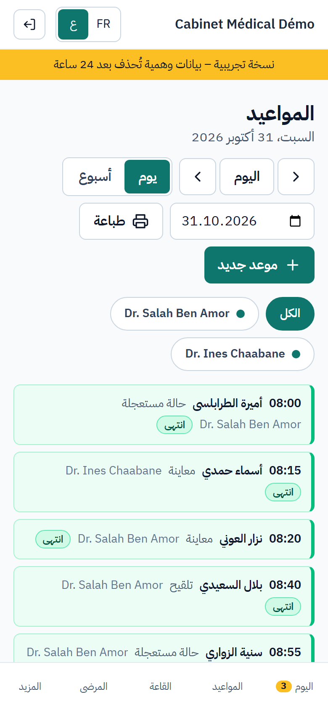
حصص منتظمة (علاج طبيعي، أخصائي نفسي…): في الموعد، تكرار (حصص)، اختاروا الأيام وعدد الحصص، ثم التحقق من التواريخ. تظهر التواريخ المحجوزة قبل الحفظ.
الاستقبال وقاعة الانتظار
للاستقبال والطبيبعند وصوله، يحصل كل مريض على رقم، بموعد أو دون موعد. شاشة القاعة وهاتف المريض لا يعرضان إلا الأرقام، ولا يعرضان أي اسم.
-
وصول المريض
في المواعيد، اضغطوا على موعده ثم على وصل. يحصل تلقائيًا على رقم في قاعة الانتظار، حسب ترتيب الوصول.
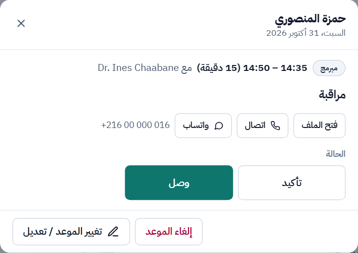
-
قاعة الانتظار
تعرض قاعة الانتظار من هو في الفحص، ومن تمّت مناداتهم، ومن هو في الانتظار، مع الترتيب ومدة الانتظار المتوقّعة. وعلى الجانب ما تعرضه شاشة القاعة.
اضغطوا على مناداة: يظهر الرقم على الشاشة. ثم في الفحص وانتهى. وغادر إن ذهب المريض.
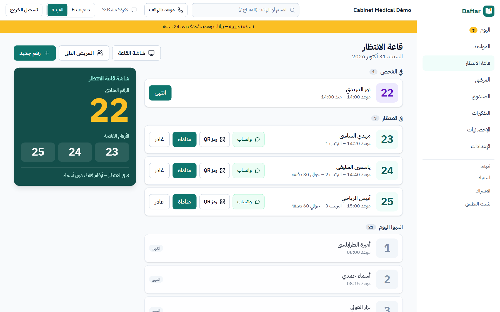
-
مريض دون موعد
رقم جديد: مريض مسجّل (بحث بالاسم أو الرقم) أو اسم فقط، ثم إعطاء الرقم.
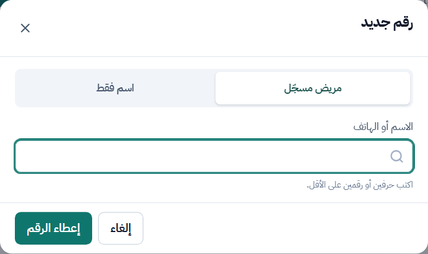
-
الرقم على هاتف المريض
زرّ واتساب يرسل للمريض رابط رقمه. أو رمز QR: يصوّر المريض الرمز ويتابع دوره على هاتفه.
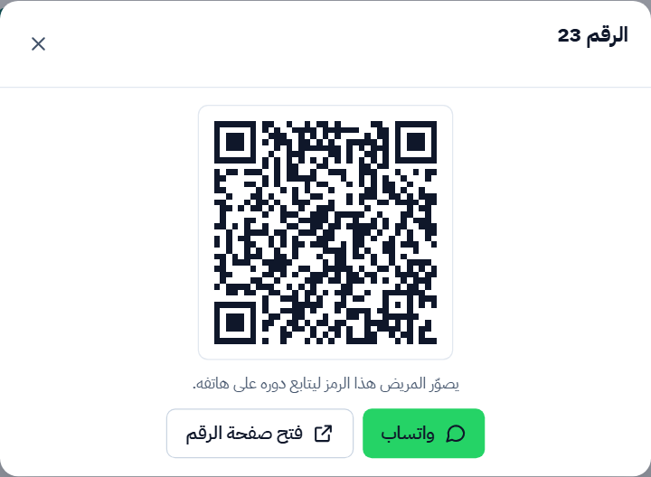
-
المريض التالي
قاعة الانتظار ← المريض التالي: الآن، وبعد ذلك، والمرضى متأخّرون. زرّ مناداة التالي ينادي الشخص المناسب: مريض الموعد إن كان حاضرًا، وإلا أوّل من وصل.
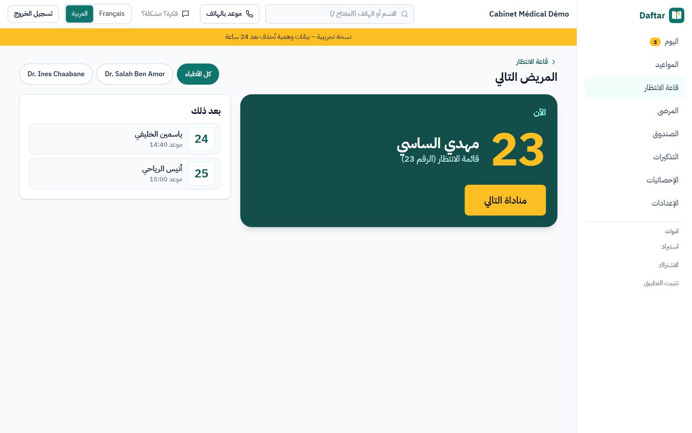
-
شاشة القاعة
زرّ شاشة القاعة يفتح الصفحة التي تُعرض على تلفاز أو لوحة رقمية (العنوان موجود أيضًا في الإعدادات ← شاشة القاعة). اضغطوا على ملء الشاشة. تتحدّث الشاشة وحدها.
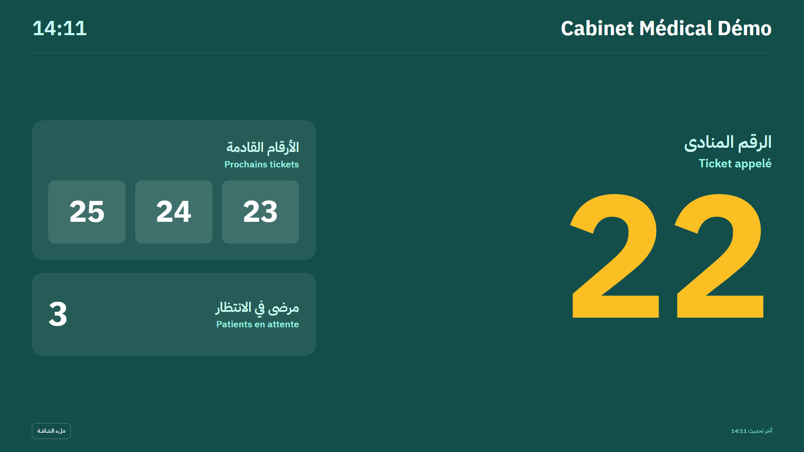
أرقام فقط، دون أي اسم. -
ما يراه المريض
رقمه، وأشخاص قبلك، والانتظار المتوقّع. تتحدّث الصفحة وحدها.
وعندما يحين دوره: «حان دورك! تفضّل إلى الاستقبال.»
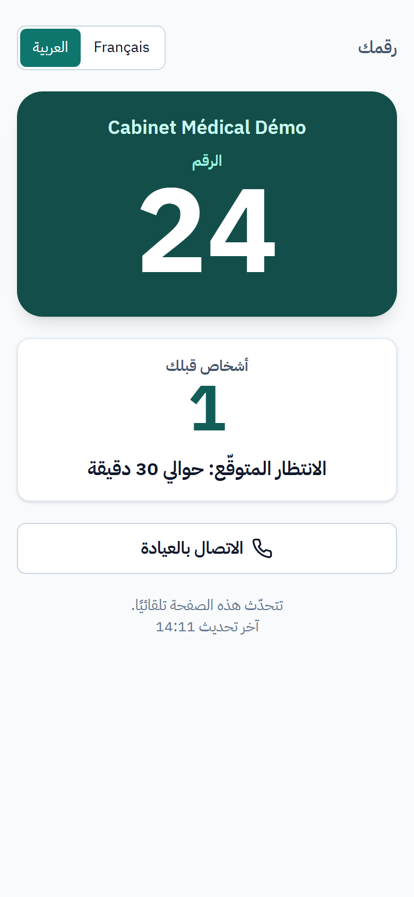
لم يحضروا؟ في صفحة اليوم، يعرض دفتر المواعيد التي فات وقتها دون تسجيل الوصول: غائب أو حضر بنقرة واحدة. ويُحتسب كل غياب في ملف المريض.
الصندوق
للاستقبال – والمراجعة لصاحب العيادةيسجّل دفتر المبالغ التي تستلمونها (نقدًا، D17، Flouci، بطاقة، صكّ، تحويل) ويحسب المبلغ المتبقّي. ولا يقبض دفتر أي مبلغ بنفسه.
-
الخدمات والمتبقّي للدفع
افتحوا ملف المريض (المرضى أو البحث في الأعلى)، تبويب الخدمات والدفعات. زرّ خدمة يضيف خدمة بسعرها.
ويعرض الرصيد: مجموع الخدمات والمدفوع والمتبقّي للدفع.
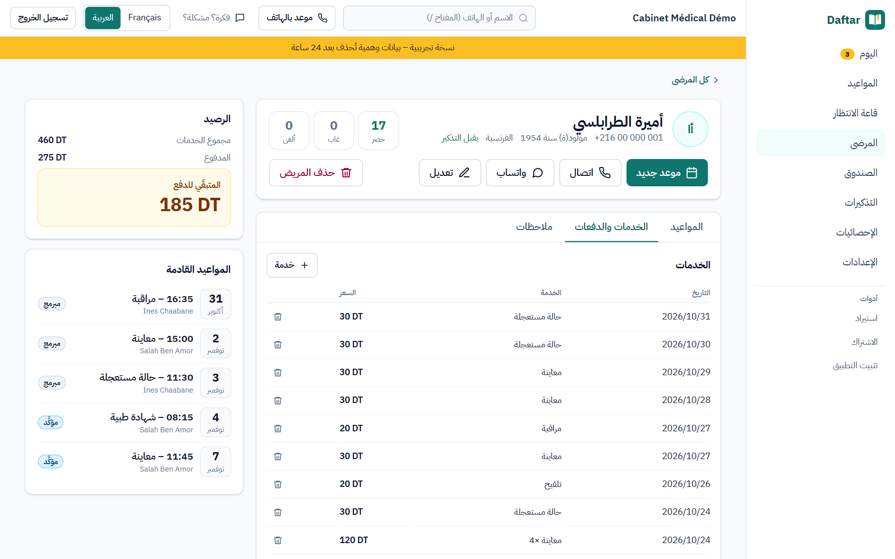
-
تسجيل دفعة
اضغطوا على دفعة. أدخلوا المبلغ (د.ت) وطريقة الدفع، ثم تسجيل الدفعة.
دفع على أقساط؟ سجّلوا كل قسط يوم دفعه: يُحدَّث المتبقّي للدفع تلقائيًا.
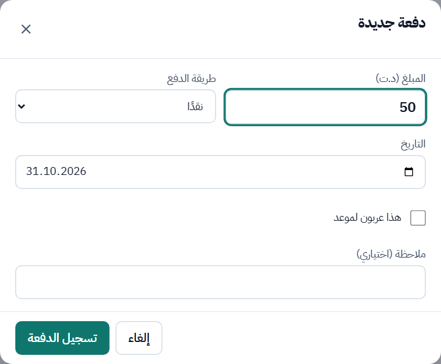
-
الوصل
في قائمة الدفعات، يفتح وصل وصلًا جاهزًا للطباعة بزرّ طباعة.
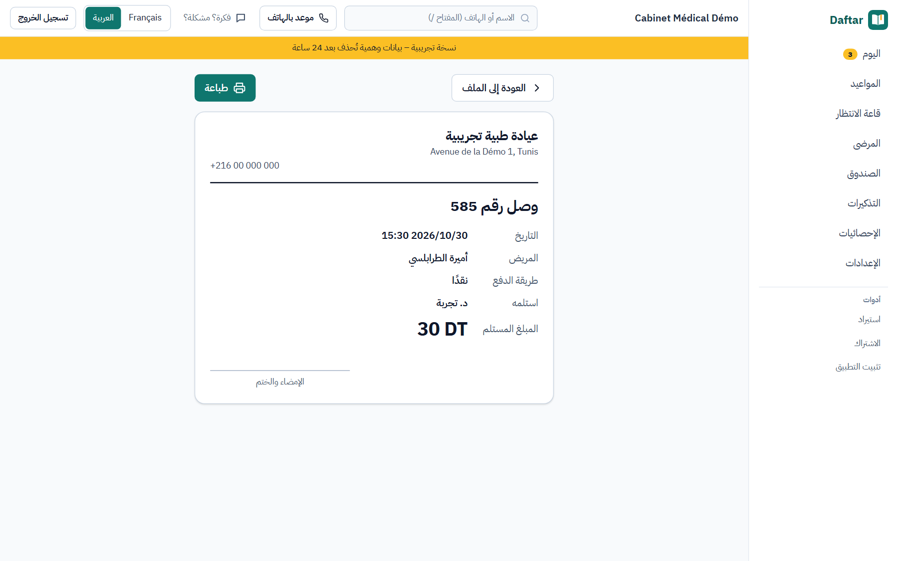
-
يُنصح بطلب عربون
لمريض تغيّب مرتين، يعرض الموعد «2 غيابات: يُنصح بطلب عربون.» وزرّ طلب … يكتب المبلغ في العربون المطلوب (د.ت).
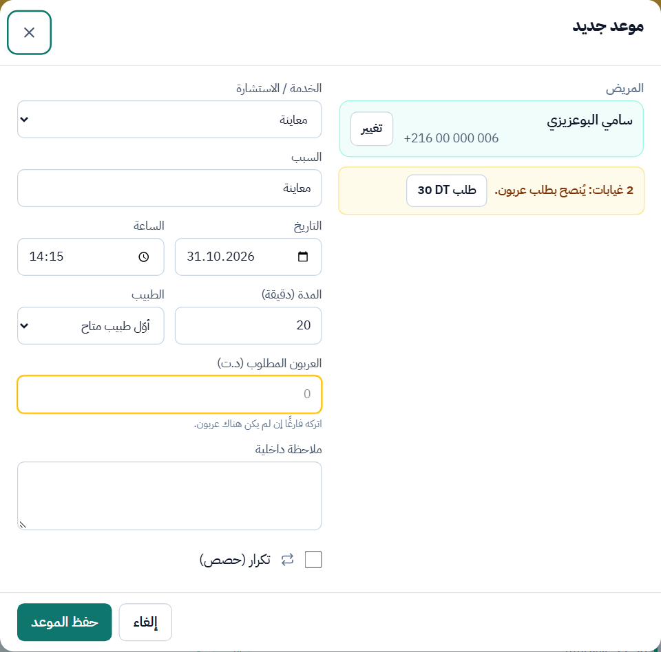
-
استلام العربون
افتحوا الموعد: زرّ استلام العربون يسجّل الدفعة مربوطة بهذا الموعد. وفي نافذة الدفعة، خانة هذا عربون لموعد تؤدّي الأمر نفسه.
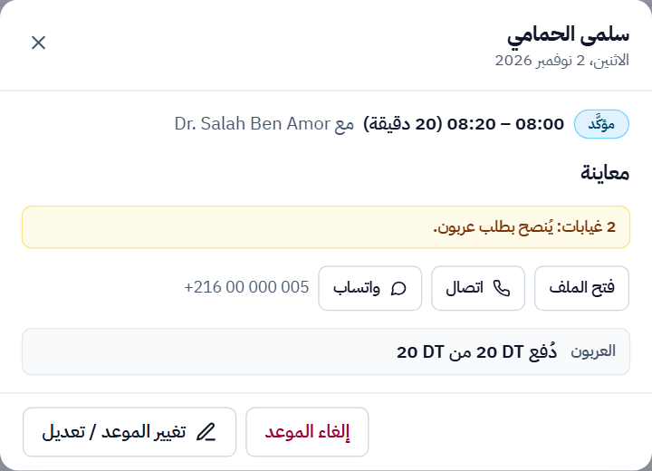
-
صندوق اليوم
الصندوق: المقبوض اليوم، والمجموع حسب طريقة الدفع، ودفعات اليوم. والأسهم لتغيير اليوم.
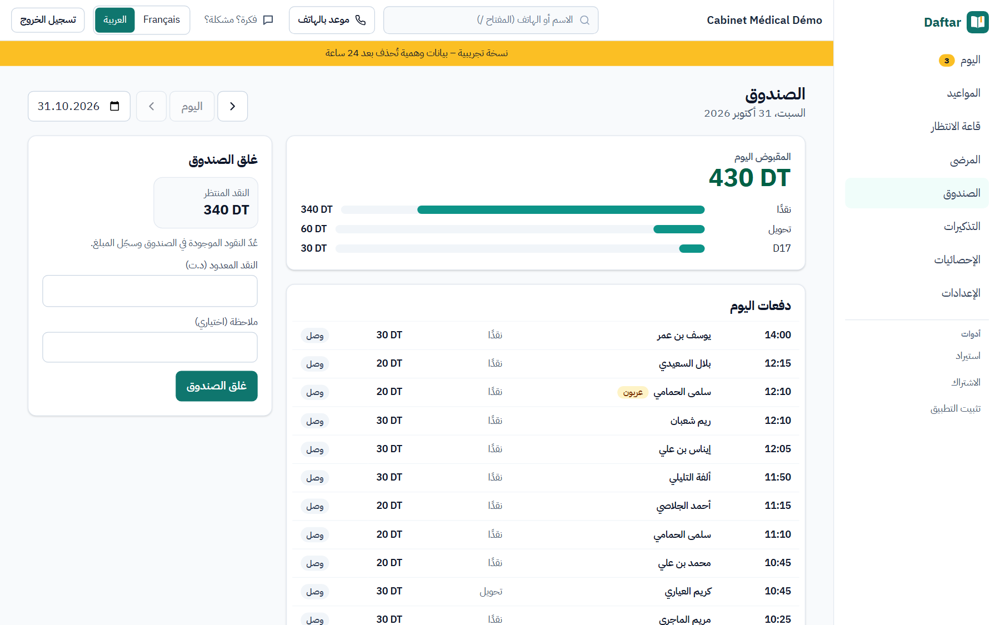
-
المبالغ المستحقّة
في الأسفل، المبالغ المستحقّة: المرضى الذين ما زالوا مدينين، من الأكبر إلى الأصغر، مع تاريخ آخر دفعة.
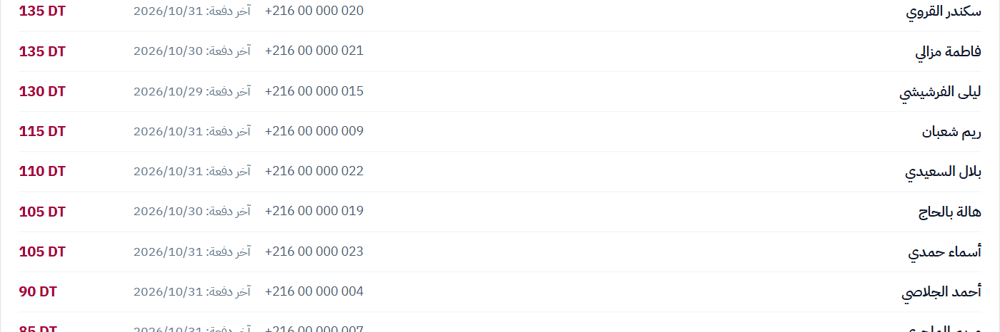
-
غلق الصندوق مساءً
عُدّوا النقود، واكتبوا المبلغ في النقد المعدود (د.ت)، ثم غلق الصندوق. يعرض دفتر الفارق: الصندوق مضبوط. أو نقص … أو زيادة …
ثم يراجع صاحب العيادة الغلق بزرّ المصادقة على الغلق. وتظهر الأيام التي تنتظر المراجعة في صفحته اليوم.
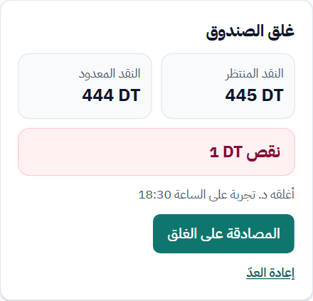
التذكيرات
للاستقبال، في اليوم السابقلكل موعد في الغد، يُحضّر دفتر رسالة التذكير بلغة المريض. وأنتم من يرسلها، بنقرة واحدة، عبر واتساب أو رسالة قصيرة: لا يُرسَل شيء تلقائيًا.
-
تذكيرات الغد
التذكيرات: مواعيد الغد والرسالة جاهزة. اضغطوا على واتساب أو إرسالية قصيرة: يُفتح التطبيق والنص مكتوب، وما عليكم إلا الإرسال. ثم يُسجَّل التذكير: أُرسل.
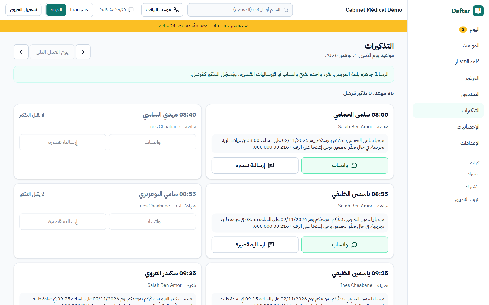
في النسخة التجريبية، لا يُرسَل أي شيء. -
من هاتف العيادة
يُفتح واتساب أو الرسائل القصيرة مباشرة على الهاتف.
المرضى الذين لم يوافقوا على التذكير يظهرون باهتين: لا يقبل التذكير.
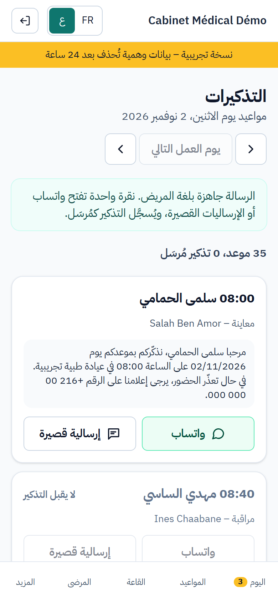
-
تعديل النص
الإعدادات ← العيادة، قسم رسائل التذكير، بالعربية والفرنسية. الكلمات بين الأقواس تُستبدل تلقائيًا: {patient} {date} {time} {practice} {phone}.
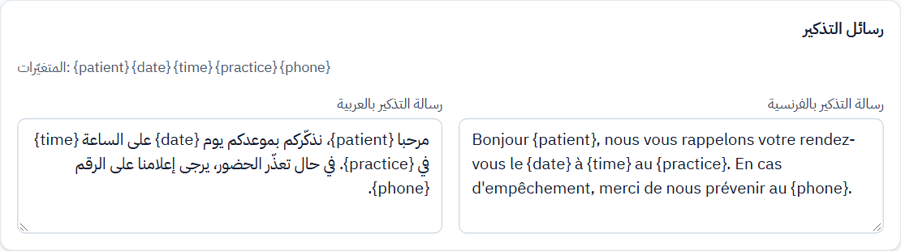
استيراد قائمة Excel
لصاحب العيادة أو المساعِدة، مرة واحدة في البدايةهل مرضاكم أو مواعيدكم في Excel؟ يسترجعها دفتر. أنتم تختارون أيّ عمود يذهب إلى أين، ولا يُحفظ شيء قبل الخطوة الأخيرة.
-
اختيار الملف
استيراد (تحت أدوات، أو الإعدادات ← البيانات). اختاروا مرضى أو مواعيد، ثم اختيار ملف، أو ضعوا الملف في الخانة. Excel (.xlsx أو .xls) أو CSV، حتى 2 ميغابايت.
إن كان في المصنّف عدّة أوراق، اختاروا الورقة المناسبة، وحدّدوا إن كان السطر الأول يحتوي على العناوين، ثم متابعة.
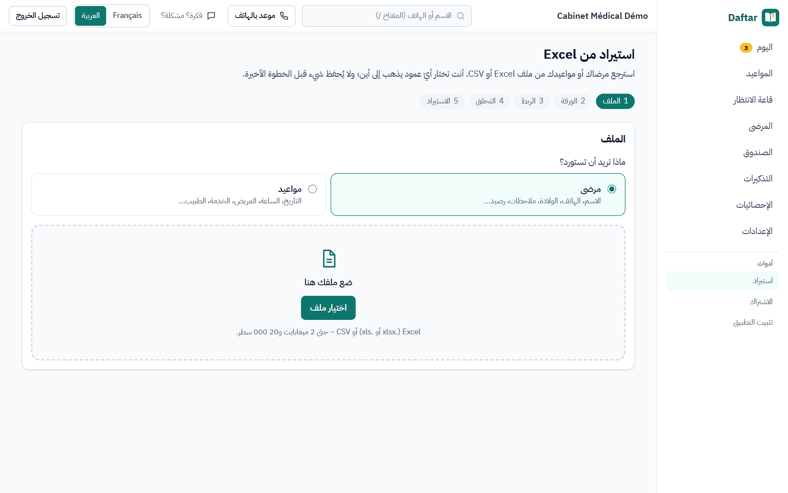
-
ربط الأعمدة
لكل معلومة في دفتر (اللقب، الاسم، الهاتف…)، اختاروا العمود المناسب من ملفكم. يقترح دفتر مسبقًا ما يشبهها: تحقّقوا منها. الحقول الإلزامية مُشار إليها. ثم التحقق من الملف.
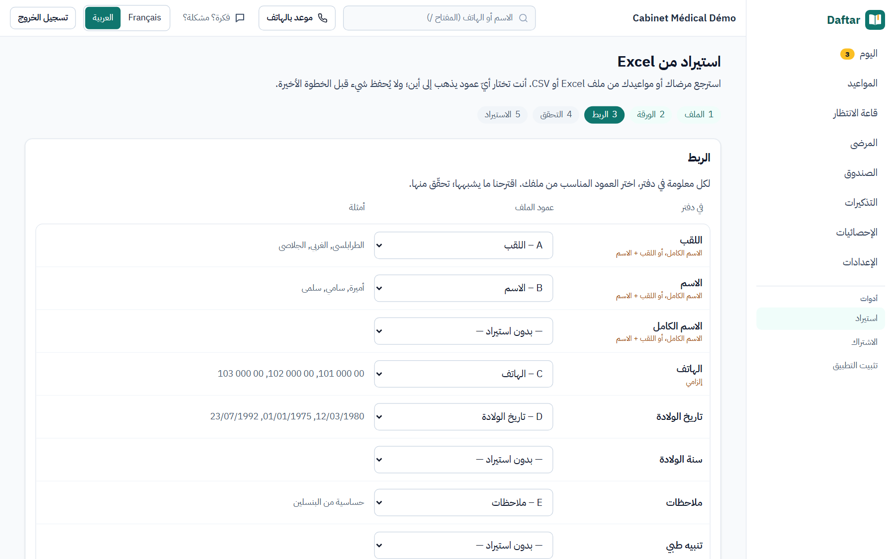
-
التحقق
يعرض دفتر ما سيفعله الاستيراد: أسطر للإنشاء، ومتجاهَلة، وفيها أخطاء، وأسطر للتصحيح. لم يُحفظ شيء بعد. وزرّ استيراد … سطر يبدأ الاستيراد.
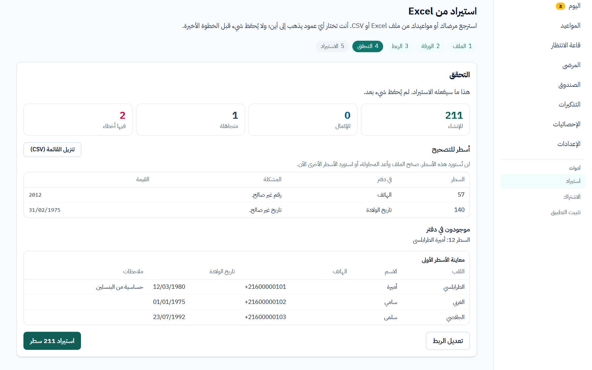
-
انتهى الاستيراد
تنزيل التقرير (CSV) عند الحاجة. وللملف القادم من النوع نفسه: الاحتفاظ بهذا الربط للملف القادم، اكتبوا اسمًا، ثم حفظ النموذج.
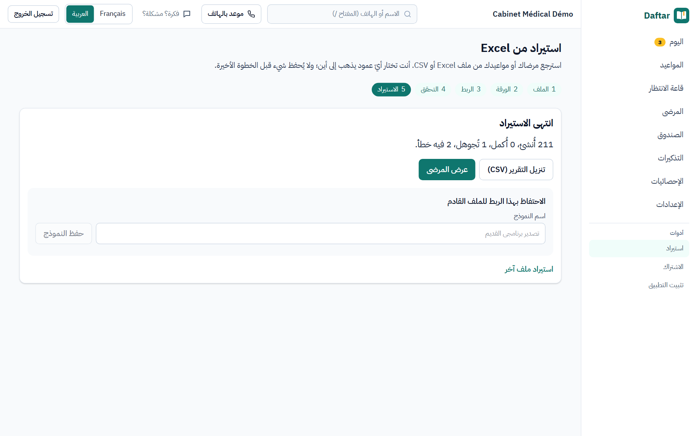
في النسخة التجريبية استيراد الملفات غير متاح. وفي عيادتكم، نساعدكم بكل سرور عند البداية.
مريض موجود في دفتر (نفس اللقب والاسم والهاتف): اختاروا تجاهل السطر أو إكمال البطاقة الموجودة أو إنشاء مريض جديد رغم ذلك.
الحجز عبر الإنترنت من جهة المريض
لمرضاكم – ومن المفيد أن يعرفه الاستقباليحجز مرضاكم على صفحة عيادتكم، في أي ساعة ودون إنشاء حساب، مثلًا cabinet-ben-salah.daftar.omarfourati.de.
-
اختيار الخدمة والساعة
يختار المريض الخدمة، والطبيب (أو لا يهمّ)، واليوم والساعة، ثم متابعة.
لا تظهر إلا الساعات الشاغرة.
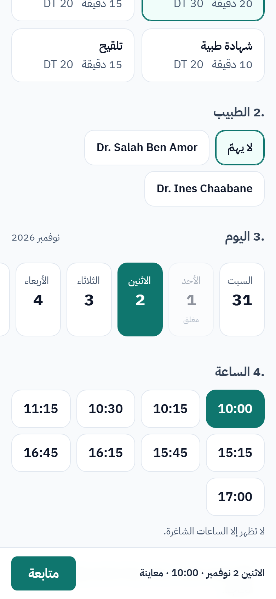
-
معلوماته
يكتب الاسم واللقب والهاتف، ويمكنه طلب تذكير في اليوم السابق.
ثم احجز هذا الموعد.
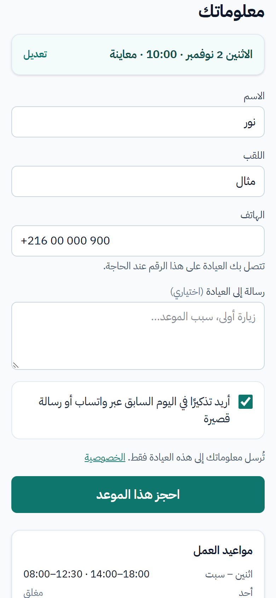
-
رابطه الشخصي
تمّ إرسال الطلب (أو تمّ تأكيد الموعد إن كان التأكيد تلقائيًا).
يحتفظ المريض برابطه الشخصي: نسخ أو إرسال عبر واتساب، وعرض موعدي.
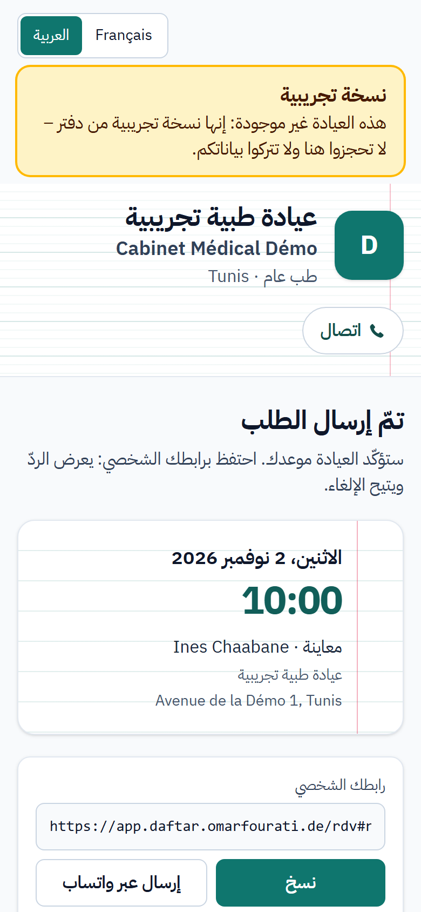
-
الإلغاء عبر الرابط
برابطه، يضغط المريض على إلغاء هذا الموعد، ثم نعم، إلغاء. يُتاح الموعد لمريض آخر.
الإلغاء عبر الإنترنت ممكن حتى المهلة الدنيا التي اخترتموها؛ وبعدها يتصل بالعيادة.
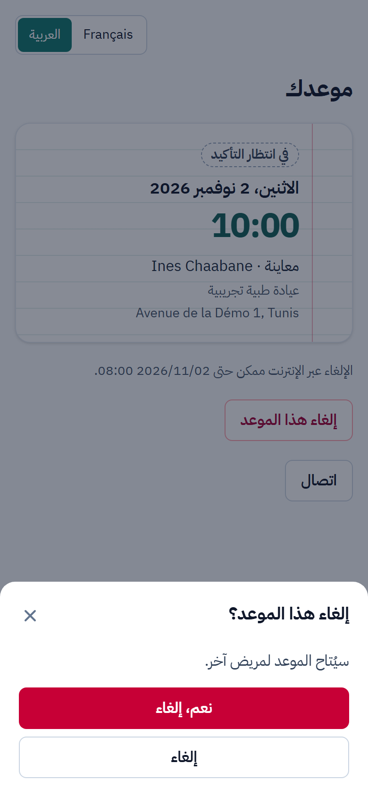
-
في العيادة: تأكيد الطلب
تصل الطلبات إلى صفحة اليوم، تحت طلبات جديدة عبر الإنترنت، وتظهر بخط متقطّع في الأجندة. تأكيد أو رفض، ثم إعلام عبر واتساب: النص جاهز.
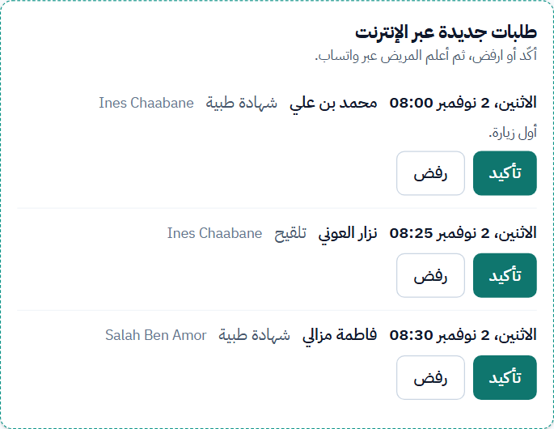
تغيّب متكرّر: الرقم الذي تغيّب صاحبه عدّة مرات لا يستطيع الحجز عبر الإنترنت (يُضبط في الحجز عبر الإنترنت)، وتدعوه الصفحة إلى الاتصال بالعيادة.